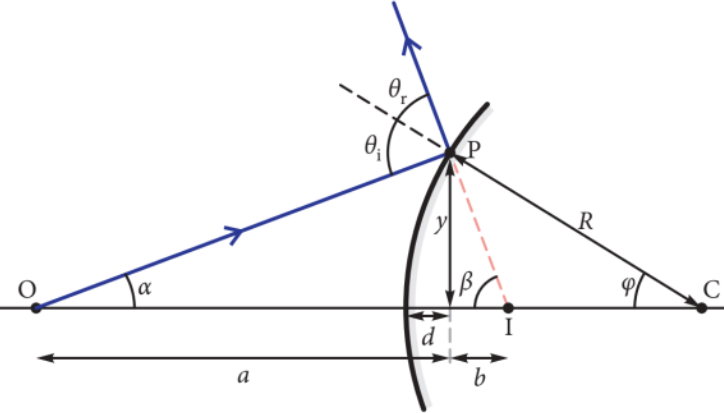

Convex mirror
The diagram above shows a light ray travelling from point O to point P (located on the surface of a convex spherical mirror). At P, the ray would be reflected outward, directly away from point I. Point C is the centre of curvature of the mirror, and R is the radius of circle formed by the mirror surface in the plane of the page. The law of reflection tells us that the angle of incidence at P equals the angle of reflection: θi = θr. Using the paraxial approximation, we can substitute the tangents/sines for the angles labelled α, β and φ, and assume d ≈ 0.
α = y/a, β = y/b, φ = y /R (3.1.1)
The exterior angle theorem allows us to state that the exterior angle of a triangle is the sum of two of the interior angles. The angle of incidence, θi, is an exterior angle of the triangle OPC so
θi = α + φ (3.1.2)
The sum of θr and θi (which is 2θi, by the law of reflection) is an exterior angle to the triangle OPI so
θr + θi = 2θi = α + φ (3.1.3)
and combining Eq. (3.1.3) and Eq.(3.2.3) gives
2(α + φ) = α + β
⇒ α − β = −2φ
Substituting in Eqns. 3.1.1 into Eq. 3.1.3:
y/a − y/b = −2y/R
dividing bt y yields
1/a − 1/b = −2/R
where a,b and R are the lenghts indicated on the diagram, and therefore positive.